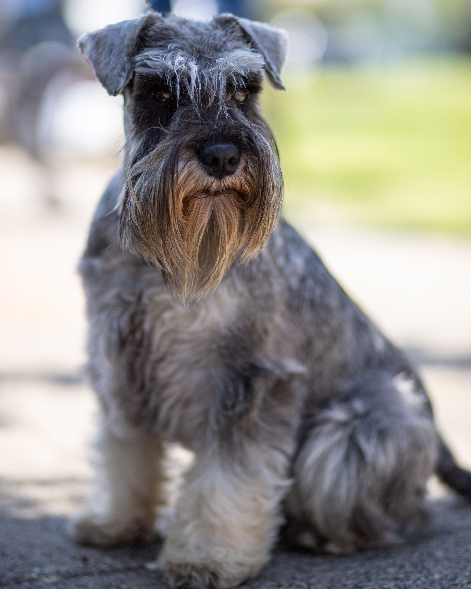

Conociendo al Schnauzer
El Schnauzer es una raza originaria de Alemania que se desarrolló como perro de trabajo en granjas. Antiguamente se utilizaba para cazar roedores, vigilar propiedades y proteger los establos. Su nombre proviene del alemán "Schnauze", que significa hocico, y hace referencia a su característico aspecto bigotudo.

Características principales
Una de sus características más llamativas es su apariencia: barba pronunciada, cejas pobladas y un pelaje particular. Es un perro atento, curioso y muy unido a su familia.
Existen tres tamaños: miniatura, mediano y gigante. En cuanto a los colores, podemos encontrar ejemplares negros, blancos, negro y plata, y sal y pimienta, siendo este último uno de los más representativos y conocidos de la raza.
Personalidad
Los Schnauzers suelen ser perros activos, inteligentes y juguetones. Necesitan compañía, estimulación y ejercicio para mantenerse felices y saludables.